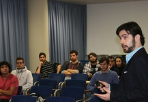

EVENTOS
- Conferencias
- Congresos
- Cursos y Jornadas
- Cultura y ocio
- Premios y certámenes
MÁS NOTICIAS | ¿QUIERES SER NOTICIA? | AGENDA | SALA DE PRENSA

La UMA aborda su estrategia de futuro con la presentación de 'La Universidad que queremos' La institución realiza un ejercicio de transparencia al hacer una reflexión conjunta sobre su situación actual y propuestas para su mejora
Leer más +- Img 1
- Img 2
- Img 3
- Img 4
- Img 5
- Img 6
| Conoce la UMA | Webs UMA | Servicios Generales |
|---|---|---|
| Gobierno | Centros | Becas |
| Campus | Departamentos | Biblioteca |
| Comunicaciones | Centro Internacional de Español | Cultura |
| Aljamiento | Cátedras | Defensor del universitario |
| Historia | Repositorio institucional | Deportes |
| la UMA en imágenes | Centro de Tecnología de la Imagen | Enseñanza Virtual |
| La UMA en cifras | Asociación antiguos alumnos | Empleo y orientación profesional |
| Relaciones institucionales | Asociación profesores jubilados | Gerencia |
| Comunicación e información | Perfil del contratante | Secretaria general |
| Responsabilidad social | Transparencia | Servicio Central de informática |